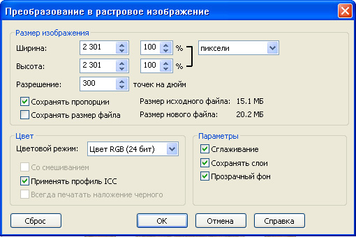

Как экспортировать CDR в PSD что-бы все осталось как в кореле (кривые, слои,размер и т.д)
aikam / 15.08.2011, 18:49/00:41
Форум:
Здравствуйте! Не могу экспортировать с корела в фотошоп.
Я прохожу пункты Опубликовать в PDF но, там нет с выбором настроек For PrePress.
Подскажите пожалуйста, Спасибо!
100% перенести никак не получится, только если руками заново сделать.
В теме у Вас обозначен тип файла PSD. Ну так и выбирайте Экспорт, тип файла PSD. В открывшемся окне настроек параметров контролируйте размеры изображения в нужных еденицах измерения, галочкой отметьте Сохранять слои, при необходимости Прозрачный фон и Сглаживание.

ОК, попробую.
Спасибо!
Ну если неважно, что всё станет растром и кривые и текст и прочее, а все объекты которые находятся на одном слое, слипнутся в один, тогда конечно подойдёт и простой экспорт :D
Нет как раз это очень ВАЖНО.Так и получилось все слиплось, не так как я хотела.
Не ужели ничего нельзя сделать?
Расслаивайте.
Слой в CDR — слой в PSD
здравствуйте aikam!
Вызовите меню объектов: window - dockers - object manager. Откроется новое окно, вверху этого окошка ищите значение pages(page1), КРАСНЫМ цветом Layer1 - обозначает объекты на 1 слое. Нажмите ПРАВОЙ кнопкой мыши правее самой надписи Layer, выберите пункт меню - new layer(можете при желании каждый слой обозвать как вам задумается, дабы обозначить элементы. При экспорте это сохранится). Вручную перетащите объекты на новый слой.
Затем экспортируйте документ как привел Solowejka
Спасибо за внимание.
Сейчас попробую!
что-то не получается. Или я не так делаю, у меня Корел 4 и еще на русском языке а фотошоп 5версия на английском языке.Все сделала, перевела но все же она как картинка.
А мне хотелось бы что-бы можно было отредактировать в фотошопе и что-бы размеры остались такие как были в кореле.
aikam,Счастье-то какое, у Вас Корел на русском! Открывайте Справку, найдите в начале раздел Объекты, символы, слои; там тему Создание слоёв.
И другие темы можете почитать. Приучайте себя работать с Диспетчером объектов (Главная
— Инструменты — Диспетчер объектов).
Страницы